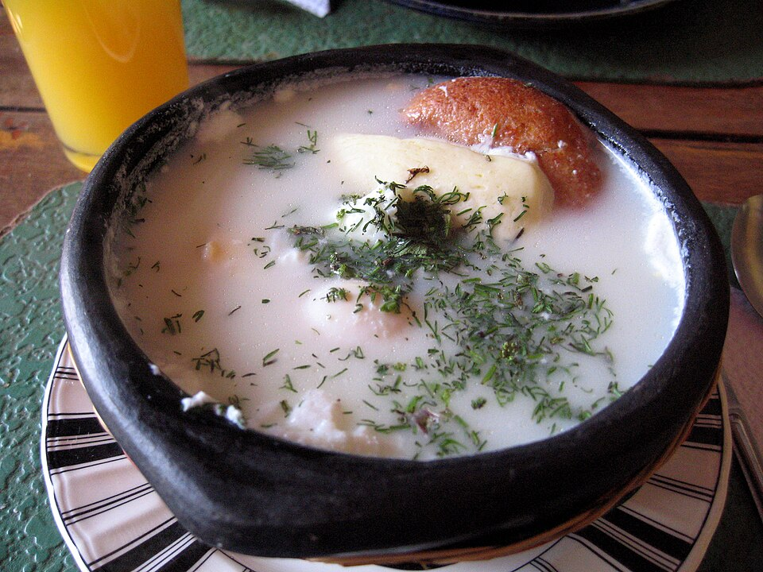

Changua
Esta página demuestra cómo hacer changua según esta receta :).

Ingredientes
- 2 cabezas de ajo
- 4 tazas de leche entera
- 2 tazas de agua
- 4 huevos
- 1 rama de cebolla larga
- 1 rama de cilantro
- 1 pan tostado o calado
- 4 pociones de queso doble crema
Instrucciones
- En una olla se pone a sofreír el ajo. A continuación, se pone el agua con unas ramas de cebolla larga e inmediatamente después se le ponen los palitos del cilantro, (las hojas se dejan para el picadillo).
- Se le agrega la leche y cuando ya casi esté hirviendo se retira el tallo del cilantro y la cebolla completa. A continuación, se le agrega el huevo con mucho cuidado para no romperlo.
- A la hora de servir se agrega el calado o pan tostado y el queso.
- Por otro lado, preparamos el picadillo (cilantro y cebolla larga finamente picado, si quieres que no se ponga negrito agrégale una cucharadita se aceite).
Home